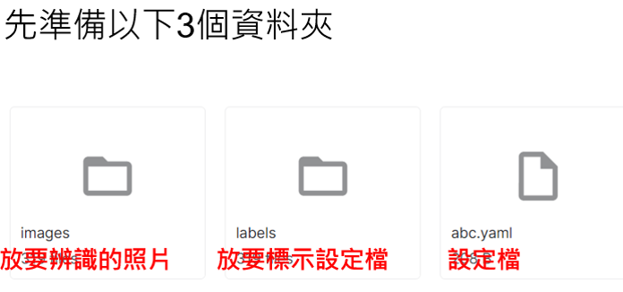
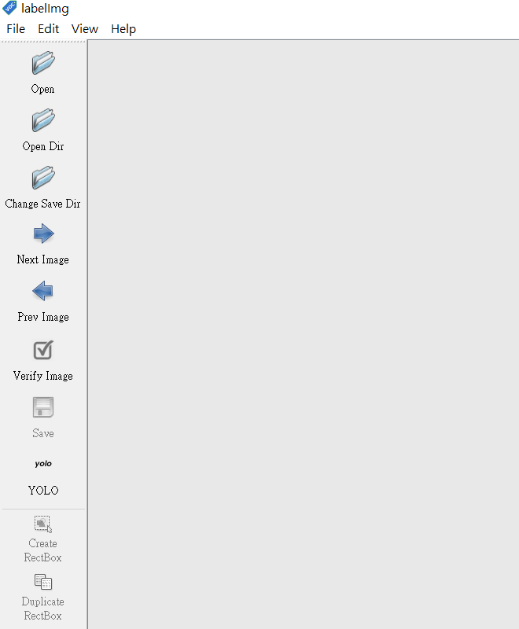
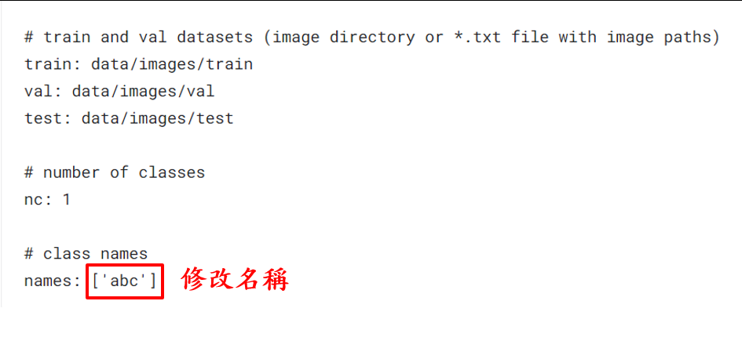
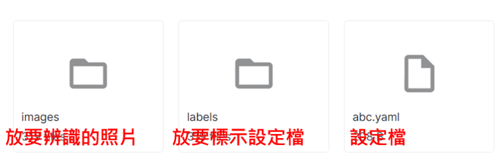
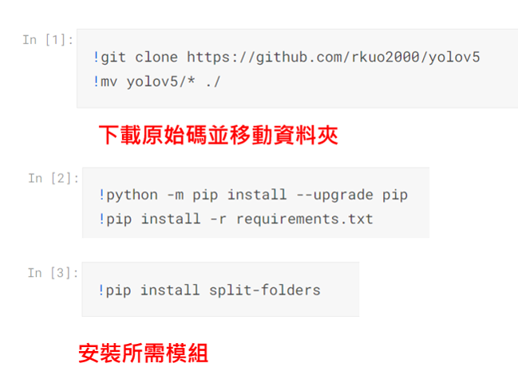
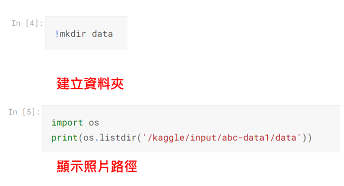
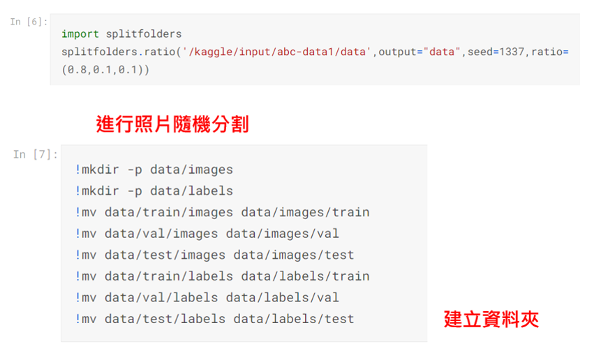
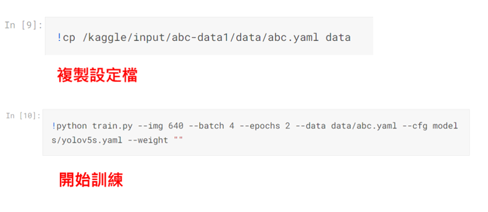
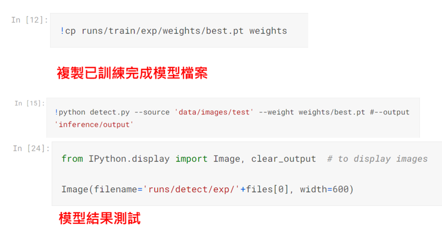

yolov5
模型訓練相關應用教學 物件偵測
訓練模型(yolov5s.pt)

標記圖片
下載圖片標記工具 labelImglabelImg 使用
將格式設定為yolo 將要辨識的物件進行標記並設定物件名稱後存檔
相關檔案設定
yaml檔案設定 設定labelImg標記後的名稱(要辨識的物件名稱)
檔案壓縮及上傳
kaggle 相關教學請參考kaggle教學壓縮zip後檔案上傳到kaggle
訓練模型





安裝yolov5及測試模型
使用cmd或gitbash輸入指令進行模組安裝pip install torch torchvision torchaudio下載程式庫 https://github.com/ultralytics/yolov5yolov5資料夾打開detect.py 辨識主程式 將151的yolov5s.pt改成剛剛下載的best.pt (使用自己訓練的模型) 將152的inference/images改成0 (使用鏡頭)